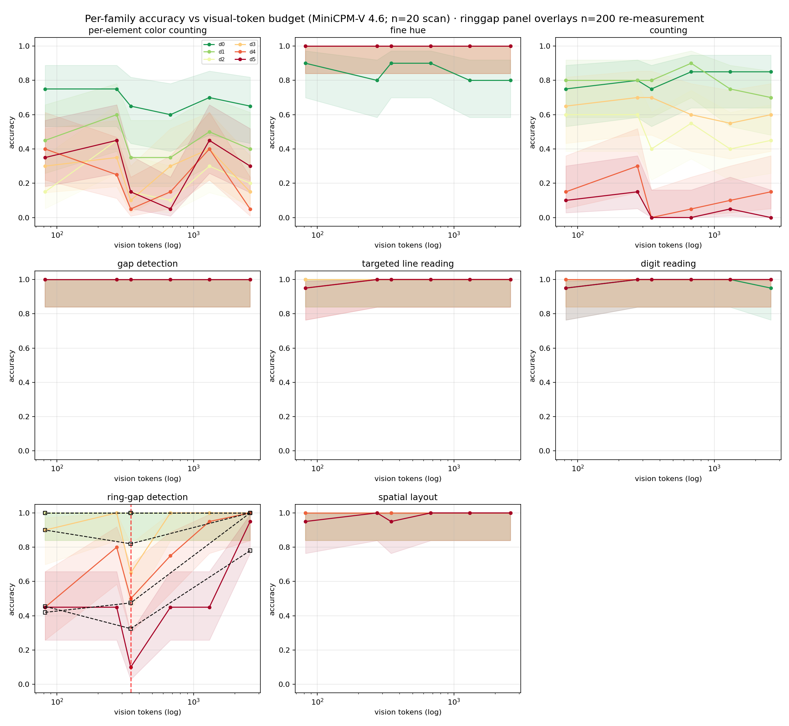

Headline
cliff at 347 tokens (0.95 → 0.10)
Second
16x@448 = 82 tokens: near-free
What this project is
Edge multimodal LLMs compress vision tokens 4x/16x to fit device budgets. Across 960 probes and a 31.7x token-budget axis (82–2,598 tokens), compression trades away per-element binding before global structure: digit reading and coarse detection survive at 82 tokens, while counting and fine-gap localization collapse below ~350 tokens. The cleanest cliff: ring-gap localization falls from 0.95 to 0.10 as the budget tightens. Every point is n=20 probes; the cliff survives 1,000-draw bootstrap resampling in 61.5% of draws with a location CI of [3,5] budget steps.
Read the technical report →
Credibility at a glance
960 probes · 6 budgets (82–2,598 tokens) · n=20/point · cliff bootstrap survival 61.5%